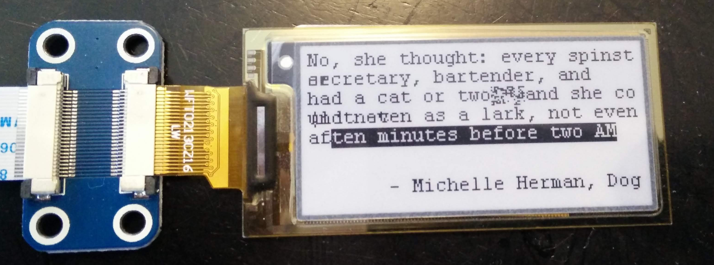
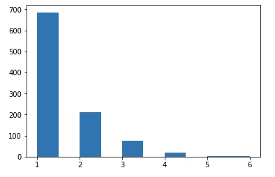

epaper-watch: Cleaning the Literary Quotes Database
paper-watch intro
My epaper-watch is an attempt to build a watch with an epaper display.
It tells time by displaying a quote from a book:

(don’t mind the graphical glitches)
The dataset with all the quotes needs some data cleaning love though.
Cleaning The Dataset
The CSV has over 1,400 quotes in it. For every minute, there may be multiple quotes (“Midnight” has 26 unique quotes). Some minutes of the day do not have any quotes.
As much as possible I used tools to programmatically clean this data and used git diff to check the output at each step.
The original database of quotes comes from quotes collected by The Guardian for an art installation.
I used an annotated version from of that database built by Jaap Meijers for a Kindle-based version of this clock.
To fit on my tiny epaper display, I had to clean up the dataset.
Quotation Mark Cleaning
The database is full of lots of quotes, as in quotation marks. Lots of them. Triple-double quotes, smart quotes, smart single quotes, backticks, etc.
Vim macros help me manually clean up the zoo of quotation marks and strip out all the extra ones. Given the limited number of characters I can display on the watch face, I don’t think there is any need to put quotes around the quote itself, just print the thing:
-"""I am going to lock you in. It is-"" he consulted his watch,
-""five minutes to midnight. Miss Granger, three turns should do it.
-Good luck."""|Harry Potter and the Prisoner of Azkaban|J. K. Rowling
+"I am going to lock you in. It is-" he consulted his watch,
+"five minutes to midnight. Miss Granger, three turns should do it.
+Good luck."|Harry Potter and the Prisoner of Azkaban|J. K. Rowling
-"We have heard the chimes at midnight."|Henry IV
+We have heard the chimes at midnight.|Henry IV
Duplicates
By sorting the dataset, duplicate quotes become more visible. Literally identical quotes can be removed programmatically:
sort litclock_annotated.csv | uniq > tmp && mv tmp litclock_annotated.csv
Many quotes are used multiple times for multiple minutes, so it isn’t safe to blindly remove any quote that is used more than once.
Manually Shrinking the Text
Many quotes are very long and contain lots of context. Some quotes are very floral and contain long run-on sentences.
I couldn’t think of a programmatic way of reducing the length of the quote to less than 180 characters.
This step was mostly manual work, tool-assisted by having the code generation python script raise an exception if it parsed a quote longer than 180 chars:
-It was eight minutes to midnight. Just nice time, I said to myself.
-Indoors, everything was quiet and in darkness. Splendid. I went to
-the bar and fetched a tumbler, a siphon of soda and a bottle of
-Glen Grant, took a weak drink and a pill, and settled down in the
-public dining-room to wait the remaining two minutes
-|The Green Man|Kingsley Amis
+It was eight minutes to midnight. Just nice time, I said to myself.
+Indoors, everything was quiet and in darkness.
+|The Green Man|Kingsley Amis
I tried to keep the time string located somewhere in the middle of the quote, with context around it. I took some artistic license in shortening the quotes and replacing the missing text with ....
Removing Non-ASCII Characters
I didn’t bother updating the epaper library to support Unicode characters on custom fonts. That would be a nice addition someday.
Till then I used sed to replace non-ascii characters en-masse with a
script.
sed 's/é/e/' $1 | \
sed "s/’/'/g" | \
sed 's/—/-/g' | \
...
Duplicating AM / PM Timed Quotes
Many of the quotes in the quote database do not have any indication that they are specific to AM or PM. For example:
"15:23": "Three twenty-three! Is that all? Doesn't time - no, I've already said that.."
There is no particular reason this quote couldn’t also work for 03:23 as well.
This procedure is fuzzy, and I required jupyter notebook to accomplish it.
The end result allowed me to add 480 more quotes:
$ wc litclock_expanded_meridiem.csv
1886 54488 354781 litclock_expanded_meridiem.csv
$ wc litclock_annotated.csv
1406 40357 261004 litclock_annotated.csv
And it added 104 new unique minute entries.
In other words, out of the 1440 unique minutes of the day, before duplicating ambiguous AM/PM quotes, I only had quotes for 895 of those minute slots, and now I have 999 minutes out of those 1440 unique slots. Now there are only 441 minutes were I do not have a quote.
Analysis
If there are 441 missing slots, then how inaccurate is this watch?
Using the same notebook, we can iterate through the minutes of the day, and find the longest gap between quotes.
After AM/PM duplication, the longest gap is 6(!) minutes, between “05:46” and “05:52”.
In [268]:
print(newbuckets["05:46"])
"He wrote a legal-sounding phrase to the effect that the sentence had been
carried out at 5.46am, adding, 'without a snag'."
In [269]:
print(newbuckets["05:52"])
"At 5.52am paramedics from the St. Petersburg Fire Department and SunStar
Medic One ambulance service responded to a medical emergency call..."
But what about the histogram?
If I’ve done the math right:

68.7374749498998 of the time is within 1 minutes
90.08016032064128 of the time is within 2 minutes
97.59519038076152 of the time is within 3 minutes
99.49899799599199 of the time is within 4 minutes
99.8997995991984 of the time is within 5 minutes
100.0 of the time is within 6 minutes
Not the most accurate time-piece?